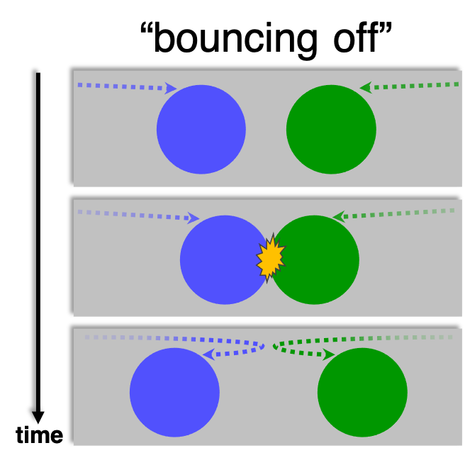
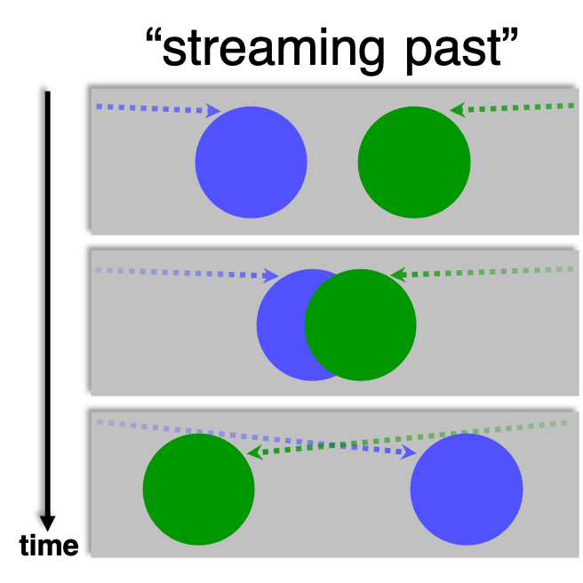

This is an experiment in which you will be asked to watch short videos and answer brief questions
about them. It should take around 8-10 minutes to complete and you will receive 0.5 credits for your time.
Note that you will need to wear headphones or earbuds during the study, so please put them in now. (It must be headphones or earbuds; computer speakers are not sufficient.)
This experiment is part of a series of studies being conducted by a member of the Cognitive
Science department at the Johns Hopkins University, and has been approved by the University's
Institutional Review Board. Please click here to review the informed consent information for
participants in this study; this document contains the Johns Hopkins IRB's seal of approval.
Checking "I agree to participate" below indicates that:
In this study, you will choose which of two actions best describes a video.
On each trial, you will watch a video in which two shapes will move. The video will repeat once. Then two phrases will be displayed.
Your job is to choose between Bounce/Stream you think best matches the video. There is no correct or incorrect answer. Go with your gut!
Also, sometimes you will hear sound during the videos, so it is important you keep your headphones on at normal volume during the study, and do not listen to anything else, like music.
We will be looking at the concept of "bounce" and "stream". Bounce is when the two objects look like they hit each other like they bounce so to speak. Below is an example of bounce:
Stream is when the two objects pass each other or phase each other. Below is an example of stream:
The whole study will only take about 8-10 minutes; please stay focused!
If you are ready, click "Start Experiment".
Done! Before submitting, please answer a few quick questions on this page and the next page.
(Please be honest! You will be allowed to submit the study regardless of your responses.)
1. Are you a native speaker of English? In other words:
2. Are you a native speaker of any other language besides English? In other words:
3. What language do you currently use most?:
1. How did you decide which phrase best matched the video?
2. Sometimes a beep played during the videos, and sometimes it did not. How do you think the presence of these beeps affected what you saw happen in the videos? (Just guess, do your best!)
3. In each trial, there were two kinds of phrases that you had to choose from. How would you describe them? (Just guess, do your best!)
Also, feel free to leave any comments below about how the experiment went. Did everything seem to work okay?